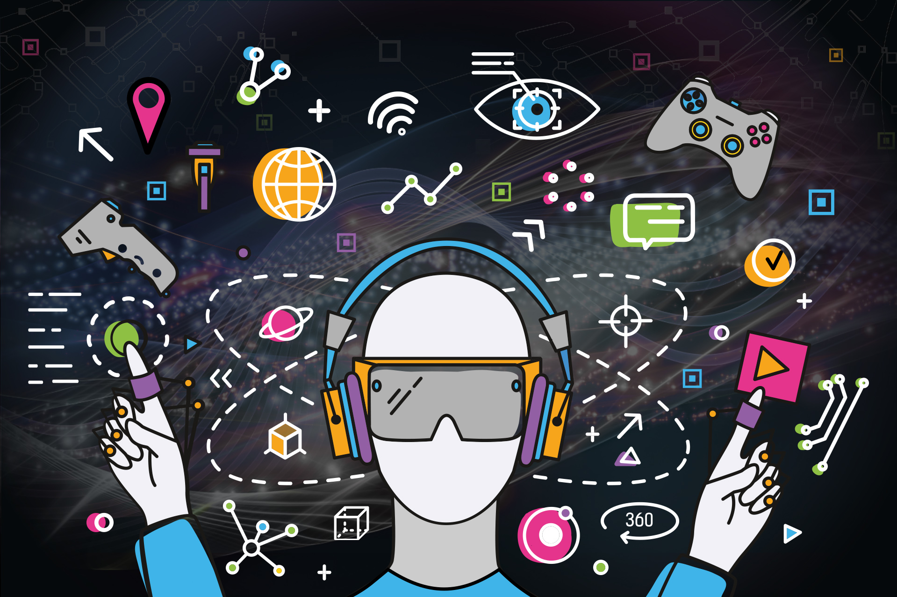

GRAB AND GO
In the blink of an eye, technology has become an integral part of our daily lives, reshaping the way we live, work, and interact with the world around us. From the advent of the internet to the rise of smartphones, the impact of technology on both individuals and businesses is undeniable
Gone are the days of waiting for a letter to arrive in the mail. With the widespread adoption of smartphones and the internet, communication has never been easier or more instantaneous. Social media platforms like Facebook, Twitter, and Instagram have connected people across the globe, redefining how we interact with one another.
Technology has revolutionized the way we go about our daily tasks, making everything from shopping to banking more convenient than ever before. Online shopping allows us to browse and purchase goods from the comfort of our own homes, while digital banking services enable us to manage our finances with a few taps on our smartphones. The rise of smart devices has also ushered in an era of home automation, where everything from thermostats to light bulbs can be controlled remotely.
The entertainment industry has undergone a seismic shift thanks to technology. Streaming services like Netflix and Spotify have made it easier than ever to access a vast array of movies, music, and TV shows on demand. Virtual reality gaming has taken immersive entertainment to new heights, allowing players to step into fantastical worlds from the comfort of their living rooms.
Businesses of all sizes have embraced technology to streamline their operations and increase efficiency. Automation tools have eliminated mundane tasks, freeing up time for employees to focus on more value-added activities. Cloud computing has revolutionized the way businesses store and access data, providing scalable solutions that can adapt to changing needs. Data analytics tools have empowered companies to make more informed decisions, driving growth and innovation.
Technology has always been a catalyst for innovation, and the business world is no exception. Companies are constantly leveraging new technologies to develop groundbreaking products and services that meet the evolving needs of consumers. Artificial intelligence, blockchain, and the Internet of Things are just a few examples of the transformative technologies that are reshaping industries and challenging traditional business models.
The internet has turned the world into a global marketplace, enabling businesses to reach customers across the globe with ease. E-commerce platforms and digital marketplaces have broken down barriers to trade, opening up new opportunities for businesses to expand their reach and enter new markets. The rise of remote work has further accelerated globalization, allowing companies to tap into talent pools from around the world.